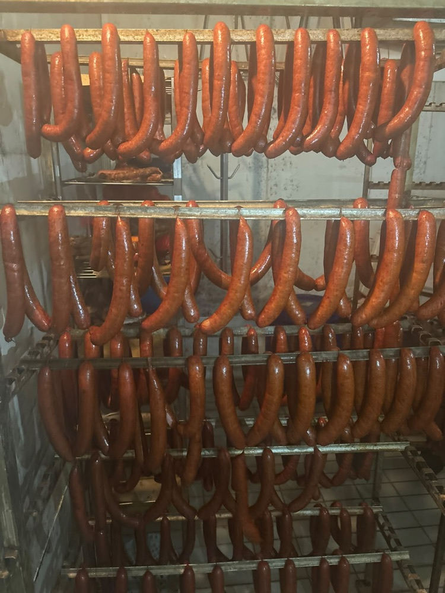
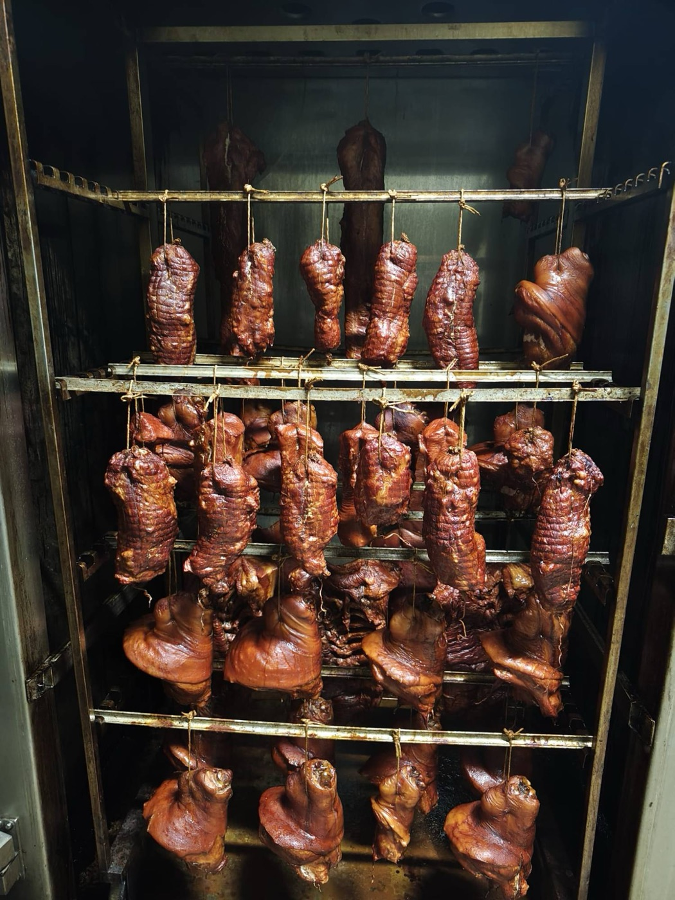
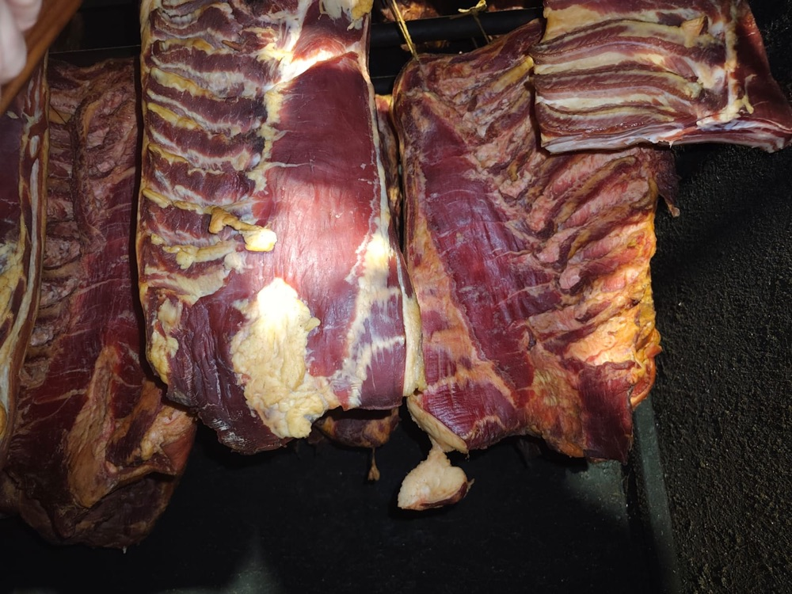
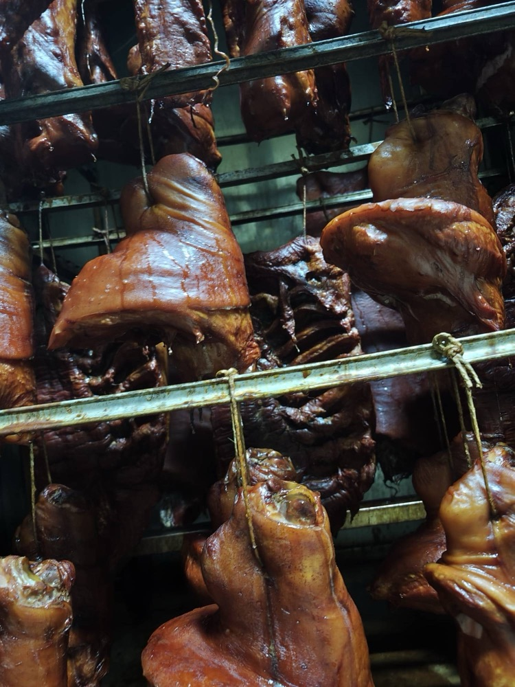
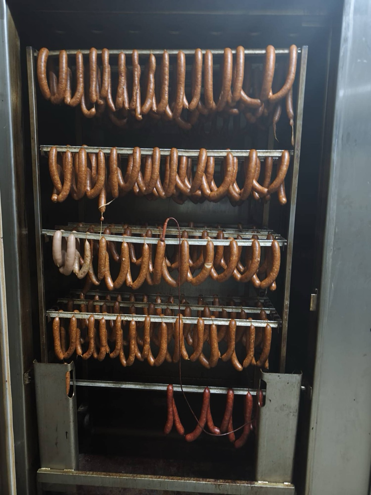
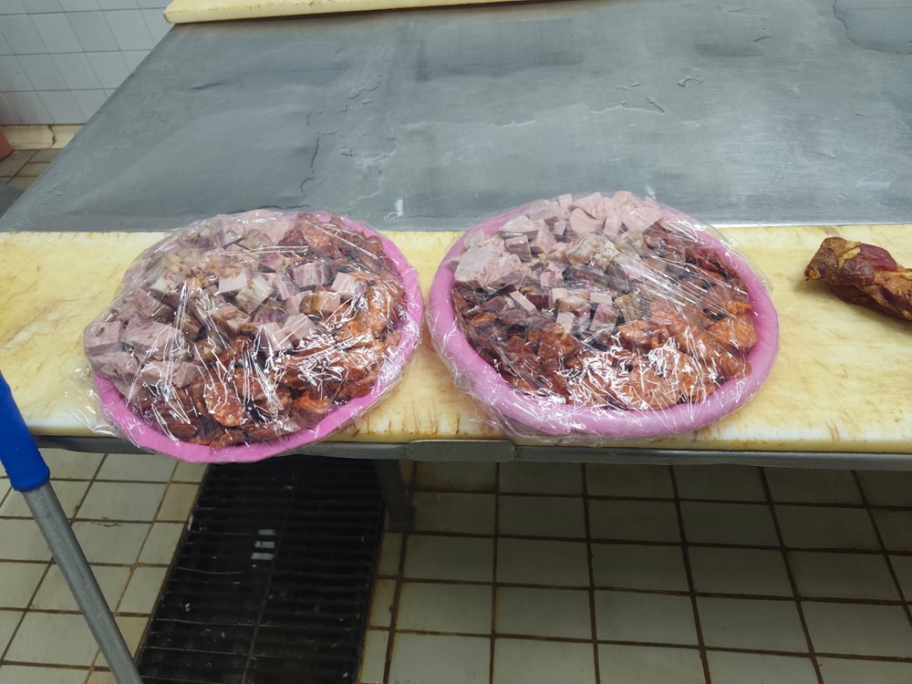
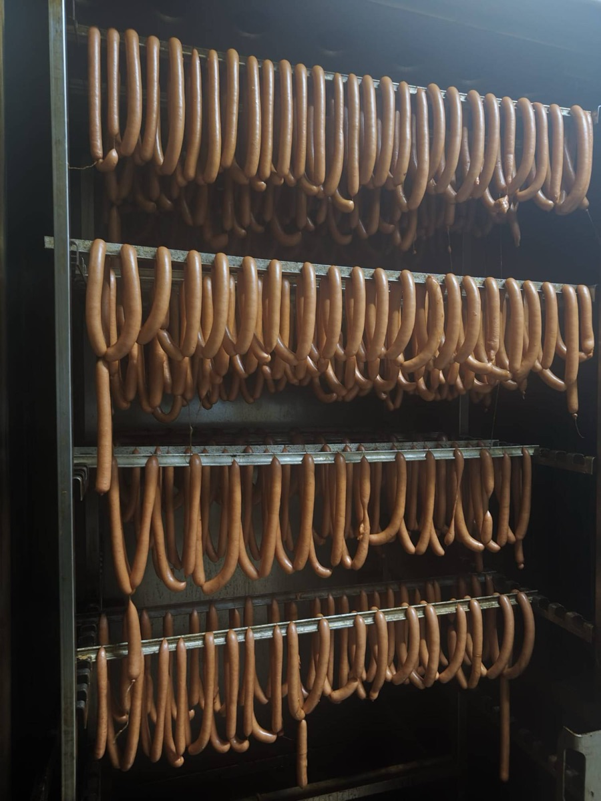
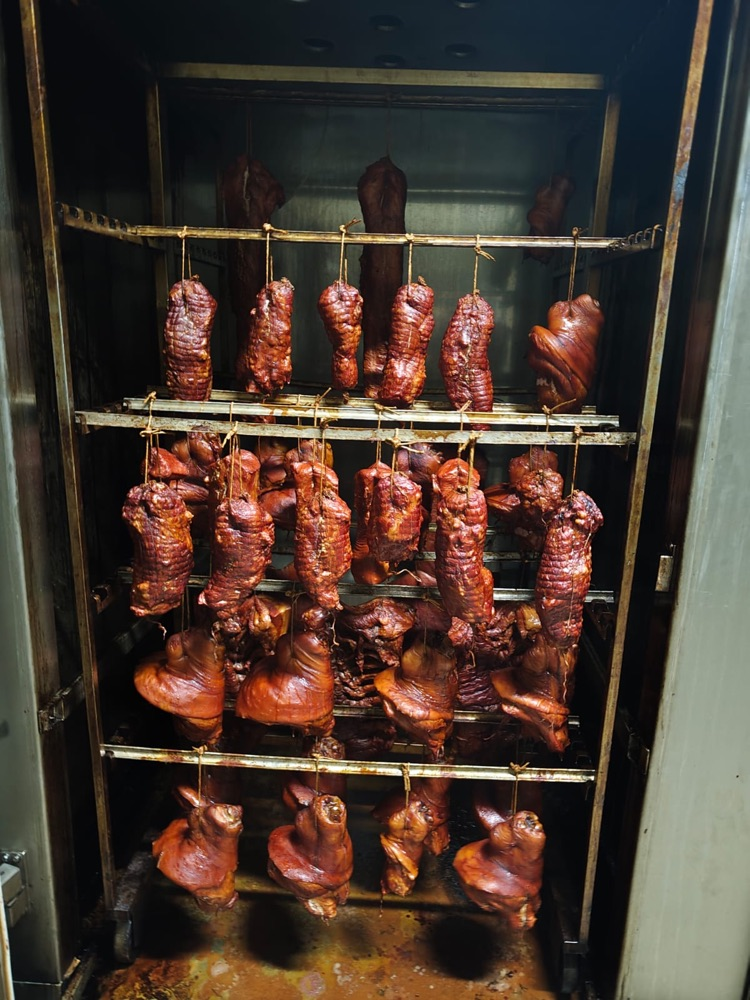
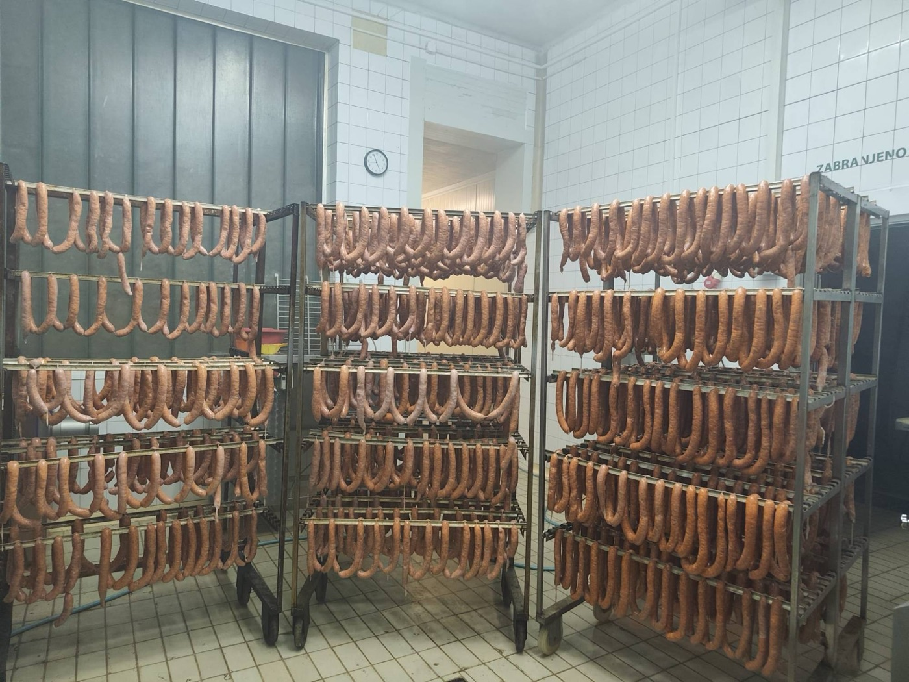

Domaća kobasica
Házi kolbász
Sveža za roštilj ili suva za hladnu zakusku, u blagoj i ljutoj varijanti, začinjena domaćom alevom paprikom.
Od 2001. godine
Domaći suhomesnati proizvodi iz srca Banata, pripremljeni sa pažnjom i poštovanjem prema tradiciji.
Pogledajte proizvodePrerada mesa Móricz
Već dvadeset pet godina u Jermenovcima pravimo suhomesnate proizvode onako kako se u Banatu oduvek pravilo: polako, pažljivo i bez kompromisa po pitanju kvaliteta. Klanica i prerada nalaze se na istom mestu, pa meso od prvog do poslednjeg koraka ostaje u našim rukama.
Svaki komad mesa prolazi kroz naše ruke pre nego što stigne na Vašu trpezu.
Isti način rada i isti ukus, bez promena od 2001. godine.
Dvadeset pet godina saradnje sa kupcima kojima smo zahvalni na vernosti.

O nama
Klanica Móricz osnovana je 2001. godine u Jermenovcima, banatskom selu u kojem je prerada mesa oduvek bila zanat, a ne industrija. Od prvog dana verujemo u jednostavno pravilo: dobar proizvod nastaje od dobrog mesa, strpljenja i iskustva.
Upravo zato klanje i preradu obavljamo na jednom mestu. Meso ne putuje i ne menja ruke, a mi u svakom trenutku znamo njegovo poreklo i put koji je prešlo do gotovog proizvoda. Tu sigurnost s ponosom prenosimo i na naše kupce.
Ponuda
Ponuda prati godišnja doba. Za aktuelnu ponudu i cene pozovite nas ili pošaljite upit.

Házi kolbász
Sveža za roštilj ili suva za hladnu zakusku, u blagoj i ljutoj varijanti, začinjena domaćom alevom paprikom.

Szalonna
Dimljena i mesnata, nezaobilazna na doručku, u pasulju ili uz komad domaćeg hleba.

Sonka és karaj
Polako dimljene i sušene, sočne i aromatične. Pravi izbor za svečanu trpezu.

Disznósajt
Banatski specijalitet pripremljen po starinskom receptu, za ljubitelje autentičnih ukusa.

Hurka
Zimska klasika iz vremena svinjokolja, pripremljena sa pirinčem i pažljivo odabranim začinima.

Tepertő és zsír
Hrskavi čvarci i čista domaća mast, osnova banatske kuhinje i domaćih pogačica.
Kako radimo
Svaki korak obavljamo sami, na jednom mestu i bez prečica.
Klanje obavljamo sami, u Jermenovcima, pa tačno znamo poreklo svakog komada mesa.
Meso sečemo, meljemo i začinjavamo odmah, dok je potpuno sveže.
Proizvode dimimo polako i na tradicionalan način, kako se u Banatu oduvek radilo.
Suhomesnati proizvodi zru onoliko dugo koliko je potrebno. Na Vašu trpezu stižu tek kada su zaista spremni.
Iz naše radionice
Kobasice, viršle, dimljeno meso i plate za proslave. Sve nastaje ovde, u Jermenovcima, pod našim nadzorom od prvog do poslednjeg koraka.






Porudžbine
Javite nam se nekoliko dana unapred i pripremićemo porudžbinu po Vašoj meri, od jednog venca kobasica do bogatog paketa za celu porodicu.
Kontakt